九个武汉普通人家的别样除夕 | 深网
原文链接 备份链接 作者 | 薛芳 孙宏超 相欣 安然 马关夏 李越 编辑 | 康晓 出品｜深网·腾讯小满工作室 欢迎下载腾讯新闻APP，阅读更多优质资讯 平平安安就是年。 突袭而至的新病毒能阻止很多中国人在这个春节里团聚，但没有什么能阻 …
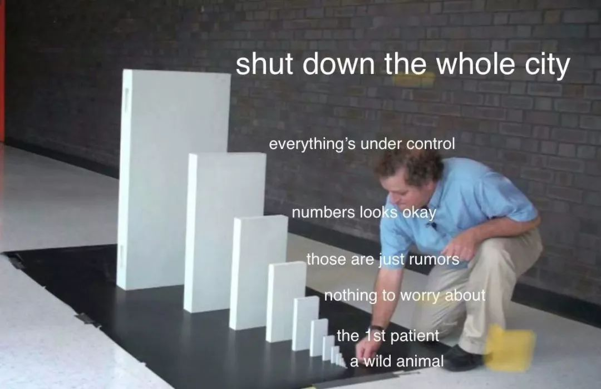
这是我的朋友郭晶的日记。
记录了封城期间在武汉独居的外来女性的真实生活体验和心理感受。
她第一次发在微博上的日记被转发近5000次，第二条就严重被限流。所以我想帮她编辑转载到微信。
有朋友建议郭晶在这段时间可以学习或者做一些工作，但显然这不太现实。
维持日常生活和健康的身体及心理状况就已经几乎花掉了她所有力气。但是她还是努力的写日记并发出来。
这些个人的经历感受，是让我们在这个时期保持连结的尝试，也是珍贵的历史记录。
欢迎大家在微博上关注@社工郭晶
这场战争里，大多个体都只能靠自己，没有体制的保障。我相对年轻，很难想象那些独居老人、残障人士等更弱势的个体要怎么打赢这场仗。
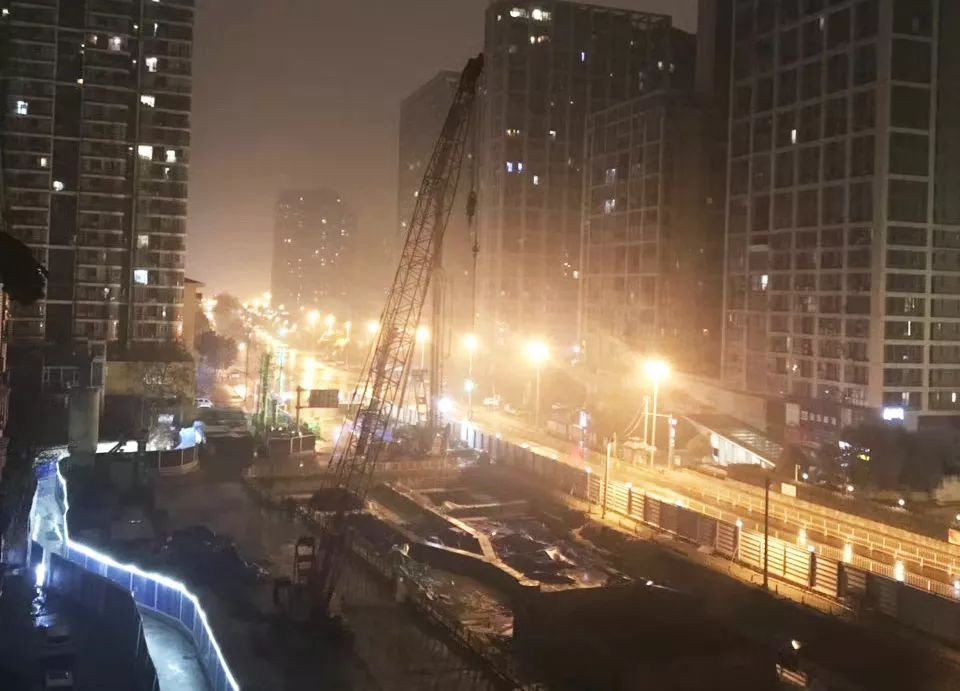
封城后从窗口看出去的景色（图片由郭晶提供）

1月23日

我算是一个遇事冷静和淡定的人，直到1月20日武汉新增病例过百，别的省市出现病例，我开始感到不知所措。此前公布的消息显然存在瞒报的情况。也是从那天起，武汉街头戴口罩的人突增，好多药店的医用口罩都卖光了，还有很多人在买防治感冒的药。刚好这段时间有点感冒，尽管基本好了，但在排队买口罩的时候，看到前面的人买了4盒奥司维他（防治流感的药），我也买了一盒，62一盒，还是有点贵。
这几天我一直处于焦虑中，从各地更新的消息来看，大部分确诊的都是在15日前过武汉的。武汉是全球大学生人数最多的城市，而1月中旬是大学放假的时间。现在又正值春运，车站人流量必然很大。然而，武汉火车站也并没有严格的监管。我春节本来就不回家，留在原地是最安全的。今天一早醒来看到封城的消息就不知所措，无法预料这意味着什么，会封多久，要做什么准备。
这几天看到很多令人愤怒的消息：很多病人确诊后也没能住院的消息；很多发烧的病人无法得到医治；湖北省W书J、省人大常委会Z任蒋·超良，省委副书J、省长王·晓东等领导于1月21日观看了湖北省春节团拜会文艺演出……

超市一角（图片由郭晶提供）
朋友们让我赶快囤点东西，我本不想出门，看到X了吗还在接单就先下了单，但又担心外卖也随时会停。我也抱着看看外面的情况的心情出了门，外面基本上都是中老年人，年轻人比较少。到了附近的超市，很多人都在排队结帐，米面这些保命的食物已经所剩无几啦，慌乱之中我随便拿了一些。有个男的卖了很多盐，有人说你买那么多盐干啥，他说万一封个一年呢。
出门的时候没想太多，没背包，也没拉箱子，拿不了很多东西。我又第二趟出门，开始意识到刚才“抢东西”时绝望的欣喜，我开始感到可怕。看到路上有的老人并不健壮，他们在这样的情况下更艰难。后来我觉得即便封城应该还是会有日常生活用品供应的，所以我第二趟就买了一些“奢侈品”，像酸奶、蜂蜜。
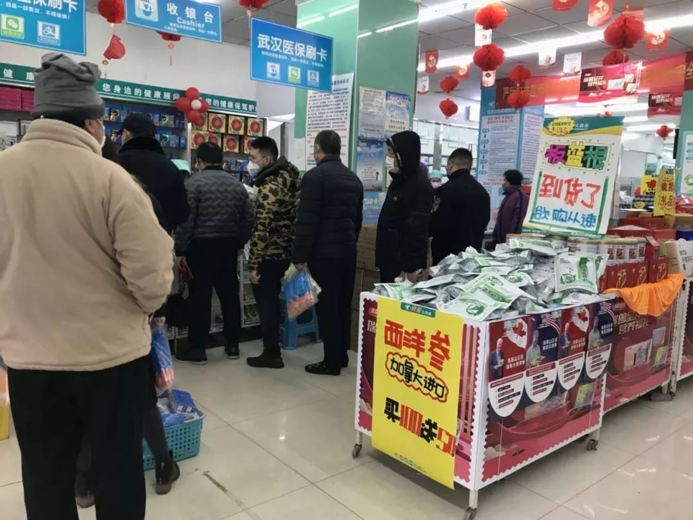
药店里排队的人（图片由郭晶提供）
回家的路上去了趟药店，药店在开始控制人进入。药店已经没有口罩和酒精，感冒药也在限购，我准备出药店的时候就不让人进了，有个中年女人拦住我让帮她买酒精。她的语气充满了急切，像是在乞求救命稻草。
屯完食物后，我依然处于震惊中。今天路上的车辆和行人越来越少，一个城市就这样一下子停了下来。它什么时候再活过来？

超市外的老人（图片由郭晶提供）
1月24日
世界安静得可怕。
我是独居，偶尔听到楼道里的声音才能确定还有其他人在。
我有很多时间思考我怎么活着下。我没有任何体制内的资源和人脉，如果我生病，必然跟很多普通人一样无法得到救治。因此，我的目标之一是尽量不让自己生病，我要坚持锻炼。要活下去还要有必要的食物，所以我需要了解生活必须品的供给情况。
目前，政府没有说要封城多久，也没有告诉我们封城后怎么保证城市的运转。而有人根据目前干扰的人数预测过可能封城到5月。为了生存，我必须了解我生活的地方的周围情况，不要活在楚门的世界中。因此，我今天出了门。小区楼下的药店和便利店都关了门。我往附近不到1公里左右的超市走，路上看到了X了吗的外卖员还在送餐，感到一丝丝安慰。
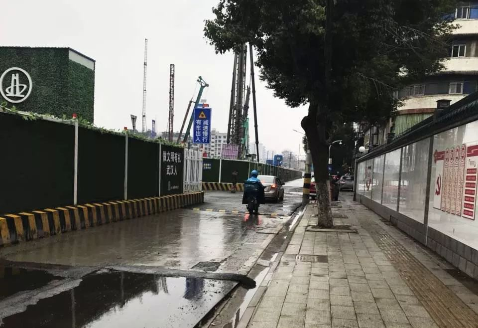
武汉的街道（图片由郭晶提供）
超市里抢购的人依然很多，面基本被抢光了，米倒是还有一些。我想着既然来了，就买一些东西，蔬菜类的东西需要称重，而称重的队伍排了二三十人，我就只买了一些香肠、下饭菜、饺子、肉。接下来，我去了药店，依然没有口罩和酒精。我买了维C泡腾片和碘消毒液。我家里基本不储存药物，因为我很少生病，我开始决定这段时间坚持吃维C泡腾片。（网友留言说不要天天吃VC泡腾片）
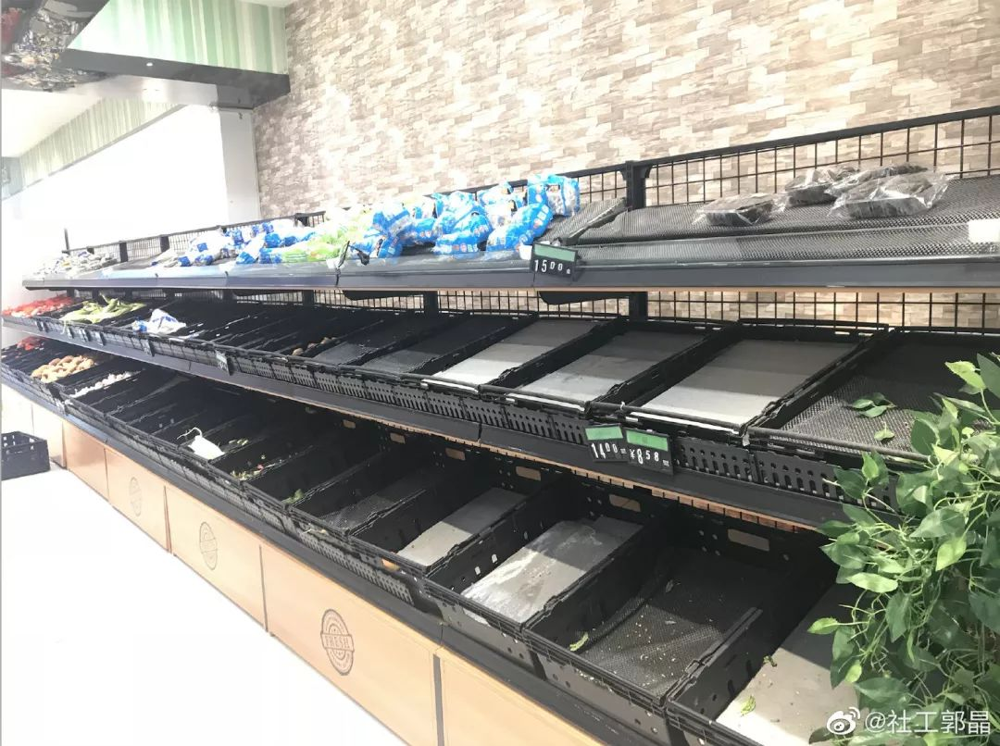
超市的蔬菜架（图片由郭晶提供）
排队结账的时候看到很多人戴双层口罩，决定以后要效仿。前面的一对夫妻在聊着还要买什么，他们买了一次性的医用手套，说出门可以戴着，太机智了。我赶快也买了一盒。后来，医用口罩到货了，1袋100个，我本来拿了两袋，导购员说一袋要198，我就默默放回去了一袋。结账的时候发现一袋只要99，我又感到后悔。不过我也增加了可以活久一些的信心。匮乏让人没有安全感，尤其在这种有关生存的极端情况下。
我又去了菜市场，摊位少了一半，卖的菜也比较少，我买了芹菜、蒜苔和鸡蛋。有几个零星的店开着门，香辣牛肉面说今天内就关门。花圈店我没问，他们似乎在看非典纪录片。看到一个还在开门的花店感到意外，下次出门它还开，我就买个盆栽。
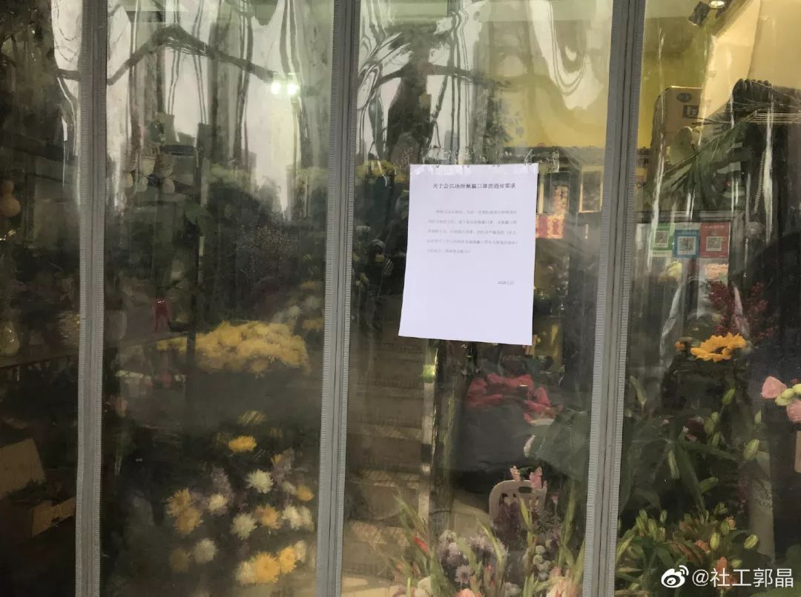
花店（图片由郭晶提供）
回家后，我就把身上的衣服全洗了，也洗了澡。保持清洁卫生现在也异常重要。一天大概要洗二三十次手。半天就这样结束了，我就开始做午饭。出趟门让我感到和这个世界还有联结，也从别人那里学到了一些生存的小技巧。
这场战争里，大多个体都只能靠自己，没有体制的保障。我相对年轻，很难想象那些独居老人、残障人士等更弱势的个体要怎么打赢这场仗。
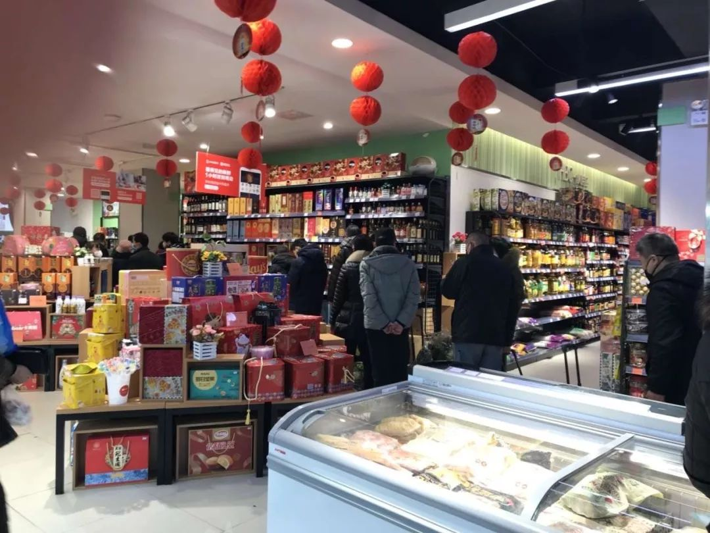
超市一角（图片由郭晶提供）

郭晶的微博留言
1月25日
武汉的天气正如现在的武汉一样阴郁。昨天是除夕，今天是春节。我对节日一向没有太大的兴趣，现在节日更加与我无关了。昨天，我发了自己这两天的经历和感受，意外地获得了很多人的关注。这种关注变成我和世界的一种联系。
吕频建议我把自己在武汉的经历写出来的时候，我有些许犹豫。有很多原因，我不想被当作一个完全的悲惨的受害者，不想给别人只有留下“她真惨”的印象。我19年11月才搬到武汉，很多人并不知道，我不太想应对很多问候，可能有人会提出帮忙，我也不想给别人带来麻烦。我对获取关注也感到不适，坦白讲我不是最惨的，还有更多生病的人需要切实的关注。可能更根本的是，我不愿意承认我很惨，承认自己的弱势需要勇气。
作为一个倡导性别平等的行动者，我比别人更清楚要解决一个社会问题，首先要有人讲出来。我决定尝试坚持记录，因为我现在的确需要支持。我公开自己的记录后获取了很多帮助，包括实用的生活技巧，比如还是不要每天吃泡腾片、注意取口罩和手套的方式、奥司他韦不能随便吃；包括感动和心灵慰藉，有人说要给我寄南京的盐水鸭，不是那种超市买的盐水鸭，也不是所谓的名牌盐水鸭，是那种平时排队买的卤菜店的，民间老百姓都觉得特别好吃的，可以真空包装的，有人说记得涂润唇膏；有人给我寄口罩、酒精，还有朋友打钱给我。
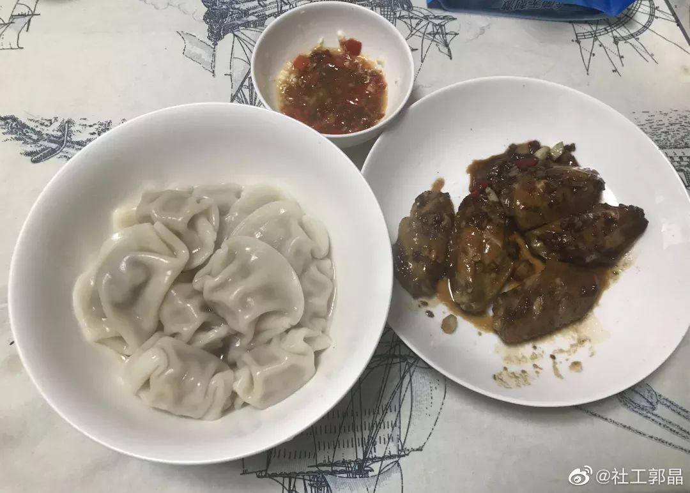
年夜饭（图片由郭晶提供）
这两天做饭的时候我已经开始控制菜量，每顿炒菜的菜量是平时的一半，希望不要那么快过只吃咸菜的生活。除夕晚上，我的晚餐是300克的玉米蔬菜猪肉馅的饺子加5个红烧鸡翅。当然，昨晚没有减量。
吃饭的时候跟一些朋友视频，我们无法逃过肺炎的话题，其实各地的人都多多少少受到一些影响，有朋友在武汉的地级市，有不同地方的朋友因为肺炎决定不回家，有朋友“冒死”相聚。幸好，我们的谈话没有被肺炎占据，谈肺炎的时候还可以拿它调侃。视频过程中有个朋友咳嗽，有人开玩笑说请退出视频。
出于对异性恋的嘲讽，我们开始玩一个“让陌生人迅速相爱的36个问题”。第一个问题是“如果可以在世界上所有人中任意选择，你想邀请谁共进晚餐”，有两个朋友说我。我略显尴尬，她们当然是真心的，尤其是我现在不知道要被困在一个城市多久。我插了话说，这个问题应该是让大家说自己的偶像、明星、性幻想对象。结果，大家的答案都很别样，还有人选了钟南山。

开门却不营业的腰花面（图片由郭晶提供）
可能问题没有那么有趣，我们很快就没有玩下去了。不知道要聊啥，就有人说最近对一些话题感到困惑，想要跟大家一起讨论。于是，我们就进入了严肃的议题讨论，包括为什么大家都在攻击吴昕个人、怎么看待亲密关系中女性的示弱。
我的女权伙伴总是会看到女性所处的环境，而不只单看某个人的言行。讨伐个人总是更容易，可是我们处在一个社会结构中。我现在的绝望感无法归咎于某个具体的个人，而是对腐烂的社会制度和结构的失望。政府是有资源和权力的一方，理应有所作为，而事实正相反。
后来，有朋友的家人点了烧烤外卖，看着她们在我面前肆无忌惮地吃烧烤好幸福。我也很开心她们没有回避我，因为这完全没有必要。每个人过好自己的生活都很重要。
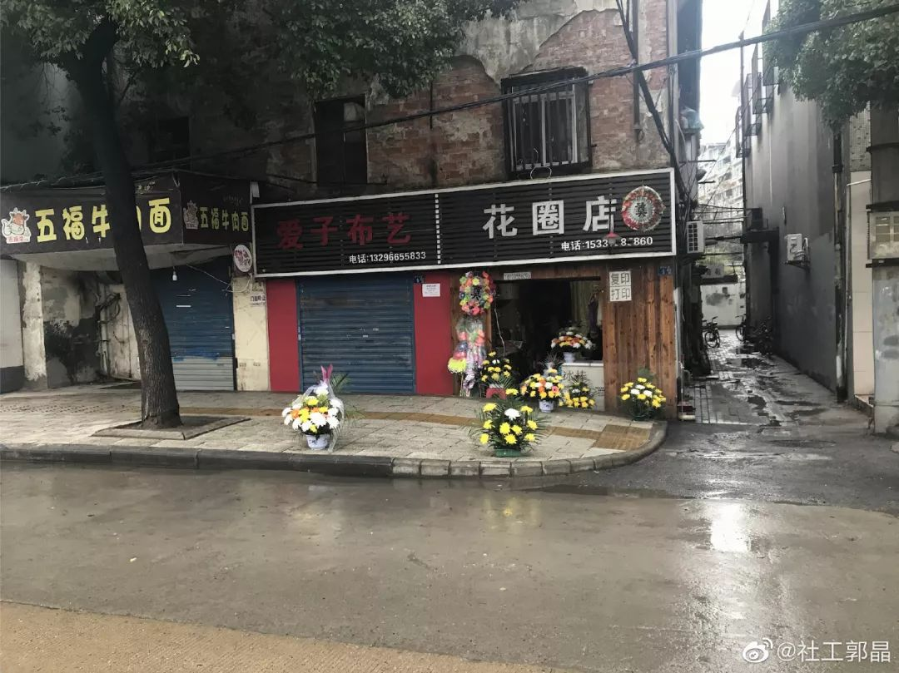
无法形容的花圈店（图片由郭晶提供）
我们聊到11点多，聊了差不多3个小时。我感到片刻的幸福，以为可以带着这份满足睡去。没想到闭上眼睛，最近发生的种种都开始在脑子里闪现，这一切真的太魔幻了。脑子里闪过“我为什么会遇到这样的事”，我赶快把这个想法叫停，因为这是一个不太好的预兆，人如果一味地对生活的质疑，只会增加人的无力感。
我知道很难，可是“怎么办”更重要。想着想着，泪水就不自觉地流出来。这些泪水五味杂陈，有无力，有愤怒，有感动，有伤心……我还想到了死亡，其实没有太大的遗憾，因为我已经在做我认为有价值的工作。
人生最幸运的事情就是成为一个女权主义者，并和一群志同道合的伙伴一起工作，互相支持和陪伴。然而我始终还是不想结束。于是脑子里又冒出了解封后要做什么，我想象那该是怎样的喜悦，度过这一关，我的人生就又升了一级。我很快又打断这个想法，毕竟才封城了两天。不知道这么想了多久，我终于睡去。

运动打卡（图片由郭晶提供）
早上7点多就醒了，不想起床，赖了一会又睡不着还是起床啦。疑病可能是现在最大的心理障碍。我早上擤鼻涕的时候看到有血丝，着实吓了一跳。丢掉纸巾后对生病的担忧就在脑子里挥之不去。
我的脑子里又回想了12月底至今一切可疑的迹象，我12月30日去同济医院眼科做检查，1月9日去桂林玩，当时有朋友感冒，我就被传染感冒，1月13日回武汉，我没有吃药，但感冒明显是有好转。之后，有朋友在我家住了几天，我也见过几个朋友。她们目前都还好。
我又在想自己是不是不应该出门。可是我并没有发烧，我很有食欲，我想和朋友一起吃火锅。我不能让自己困在疑病的漩涡中，我打开Keep,开始做运动，做完运动我还是出了门。

放着菊花的店（图片由郭晶提供）
外面依然很萧条。今天我戴了双层口罩，尽管很多人说没用，也没有必要。我担心万一有假冒伪劣产品，再不济它也能增加我的安全感。出门的时候在电梯的镜子里发现有眼屎，我觉得还是不处理比较好，就随它去了。看到一家腰花面开了门，我刚要往里进，老板摆了摆手表示不营业。花圈店还开着，而且特地在门口摆了些菊花，不知道是否有特别的寓意。离花圈店5米远的一个巷子口摆着同样的菊花，一个老人家站在那里，有种肃穆的感觉，我走过了才小心翼翼地扭过头拍照。
我去了同一家超市，蔬菜架基本是空的，饺子和面也都所剩无几。今天没啥人排队称重，我就买了一些红薯。来超市好像必须要买一些东西，其实我已经存了大概7公斤的米，我还是又买了2.5公斤的米，还没忍住买了一些饺子、咸鸭蛋、肠、红豆、绿豆、小米。我并不怎么喜欢吃咸鸭蛋，存着只是为了以防万一。等解封了还剩咸鸭蛋我要把它送人。忽然觉得这种做法有点病态，其实我家里储备的食物至少够我吃一个月啦。可是我又怎能在这种情况下过分苛责自己呢。
我也去了同一家药店，问有没有酒精，导购员回答完没有后，又说你昨天不是来过吗。我说是呀，心想我可能会每天都来。
花店还开着，剩下的盆栽都没有那么绿意盎然。我就选了一盆叶子上有些斑点的绿萝，因为它好养。我家里有一盆病了的薄荷，它的叶子开始慢慢变黄。这是我第一次养薄荷，我不确定是怎么回事，不知道怎么办。接着，我去了菜市场，它今天关门了。
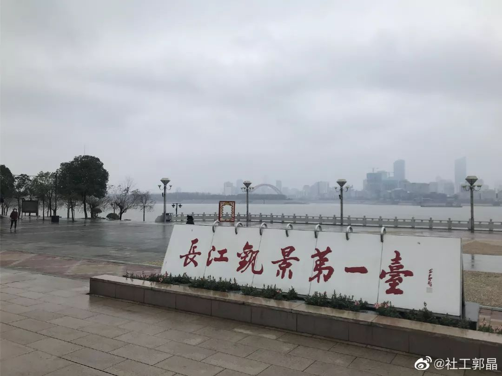
长江观景台一角（图片由郭晶提供）
我计划今天去江边走一走。出门的时候喝了点水，逛超市的时候就有尿意，再加上拎着东西，我有点想放弃。可是我的生活实在太单调了。超市离江边的距离大概500米，我就从超市旁边的路绕去江边，路上也有2家小卖铺开门，还有人在遛狗。这是一条我没有走过的路，莫名觉得自己的世界被打开了一点点。江边也有零星的散步的人，他们也是不愿被困住的人吧。
每天去超市对我来说像是在抓住最后一些可以抓住的东西，我不能每天都去超市，得让自己有放松的时间。等哪天有太阳，我就不去超市，只到江边走一走。

郭晶的新盆栽——绿箩（图片由郭晶提供）
1月26日
正在被封锁的不只是一个个城市，还有人们的声音。
我第一天把笔记发微博的时候图片就上传不了，文字也发不出去，我只得把文字转成图片发。昨天，我把文字转成图片也无法在朋友圈发，微博发出来之后明显被限流。1月24日的微博有近5000人转发，而昨天的微博只有45人转发。有一瞬间我还怀疑是不是我写得不好。互联网的审查和限制不是现在才有，可在这个时候却显得更加残忍。很多封城的人被困在家里，大家靠互联网获取信息，保持和家人朋友的联系，让我们不用真的是孤岛。
24日发了微博之后，央视新闻调查的编导打了电话给我，她说看到我的微博，没想到我在武汉。她去年在拍一期关于就业性别歧视的节目，因为我这些年一直在做相关的工作，她就采访了我。之后，我们的联系就很少，接到她的电话我感到些许惊喜和感动。这两天，有人跟我分享他们现在的处境，有人发来关心和祝福。一开始写得时候我不确定自己是否能坚持每天写，但现在我决定许下这个承诺，我会坚持写，并努力发出来。也许之后还会有封锁，我希望大家如果看到我的笔记就帮忙转发，并记得@我，让我知道有人在看。

央视对郭晶的报道（图片由郭晶提供）
昨天的晚饭是红薯、酸奶加炒茄子。昨晚，我又和我的朋友们视频聊天了3个多小时，有很多闲聊。我们又聊到““如果可以在世界上所有人中任意选择，你想邀请谁共进晚餐”，前一天选择跟我一起吃晚饭的朋友昨天就换了人。
大家都知道保持锻炼很重要，可是一个人坚持很难。前几天在我家借住的朋友说，她在我家的时候可以做到每天逼着我俩练尤克里里，她自己一个人在家就没有练。于是我们就提议大家在视频的时候做运动，真的有好几个人动了会。一个在北京的朋友说北京的城际大巴停运了。
广州的朋友也有看到一些关于广州封城的小道消息。大家说让我写一下购物清单（我放在最后啦）。我们也聊到很多志愿组织，有组织捐赠物资的，有整理信息的。我们担心在肺炎中女性照顾者等女性的身份和视角可能会被忽略，于是我就建立一个“关于肺炎的女权主义者”的群，希望从女权的视角展开讨论和行动。和大家一起讨论怎么办，可以帮助个体克服一些无力感。
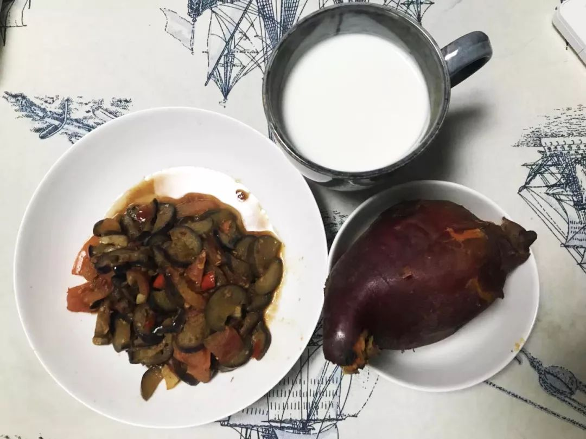
晚饭（图片由郭晶提供）
生活发生巨变的时候，重新建立日常会是一个巨大的挑战。早上我继续做Keep。Keep是有提示音的，本来该做支撑侧提膝的时候，我突然意识到自己在做支撑交替摸肩。我并没有集中注意力在做运动，脑子被很多东西占据着。但是建立新的日常生活是在找回掌控感，为了保持健康，我必须要努力。准备出门的时候，我发现昨天的衣服忘了晾。我不得不再准备一套出门的衣服。
走出小区的那一刻，萧条感扑面而来。两边的店铺全都关了门。我只看到3个人，一个环卫工，一个门卫，还有一个路人。我开始在心里数我今天会遇到多少人。走到离我家500米的腰花面店的时候遇到了8个人。

武汉街景（图片由郭晶提供）
腰花店还开着门，老板原来在做外卖。花圈店关了门。昨天的那个老人家还站在巷子口，没戴口罩，看着零星的路过的人。
超市还开着门，放蔬菜、面条、大米的架子都空荡荡的，今天再次有很多人在排队称重。我在超市转了一圈，今天终于没有再买东西啦，感到一些自豪。花店外出送花了，菜市场依然关着。
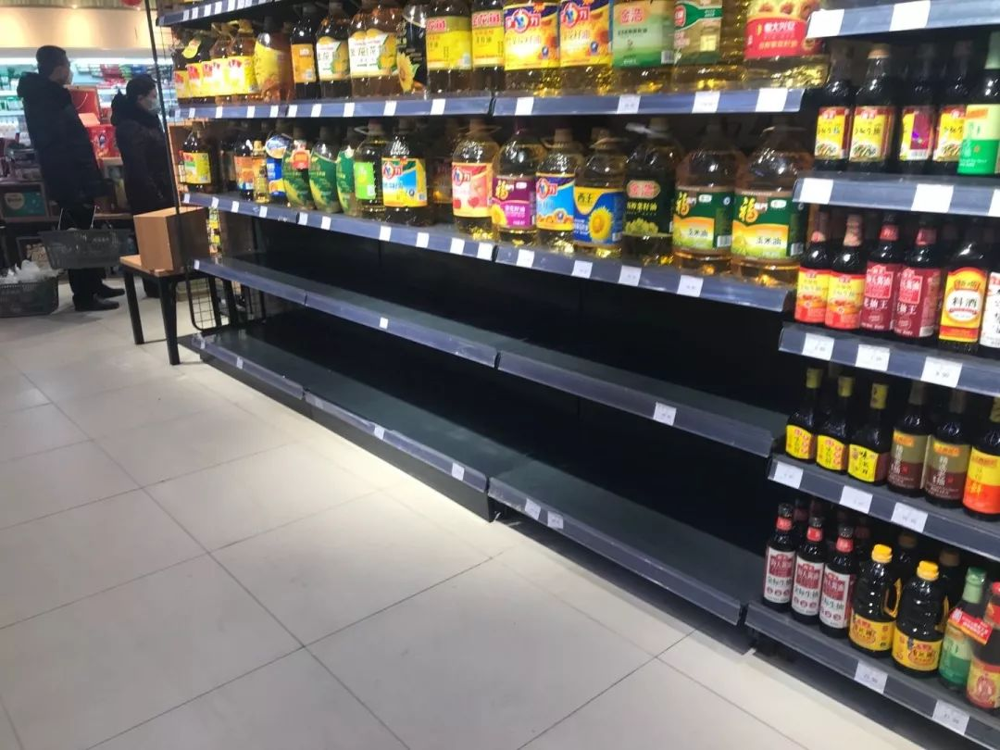
超市一角（图片由郭晶提供）
走完每天必走的路线，我突然不想回家，不想生活只是困在一定范围内。于是，我决定往前走一走。来武汉2个多月，我不喜欢逛街，在这个城市也没啥朋友，就很少出门。12月底一个朋友从外地来，她带我去了我家附近的网红街——昙华林。当时我说，以后有朋友来我就可以带她们来这里。看到路上有去往昙华林的指示牌，我就跟着走啦。
红绿灯还亮着，看到红灯，我自觉地停了一下，然后惊觉路上根本没啥车，就继续走。指示牌把我引到了一个城中村，走在狭窄的小道上，听着自己的脚步声，彷佛感到我对武汉多了一些了解。有一个开着的门里摆着灵堂，不知道她是不是死于肺炎。城中村总是像迷宫，不知道会走向哪里。

武汉街景（图片由郭晶提供）
我不知道自己走到了哪里，反正没有走到昙华林。不过昙华林本来也不是我必须的目的地。走了大概1公里，我就往回走。往回走的路上，那个摆着灵堂的门关上了。路上四五家的门口都贴着挽联，第一次路过的时候我压根没有注意到。
从超市开始我就没法精确地计数啦，我今天大概遇到百余人吧。回家依然是洗衣服、洗澡、拖地、做饭。吃完饭，我才感到能喘口气，也有些许疲惫。这大概就是很多家庭主妇的日常工作吧，她们能日复一日地如此真是厉害。我打算睡会，也没睡着，因为想着要写今天的笔记。我要继续发声，打破封锁，也希望你保有希望。朋友，有机会见面聊。
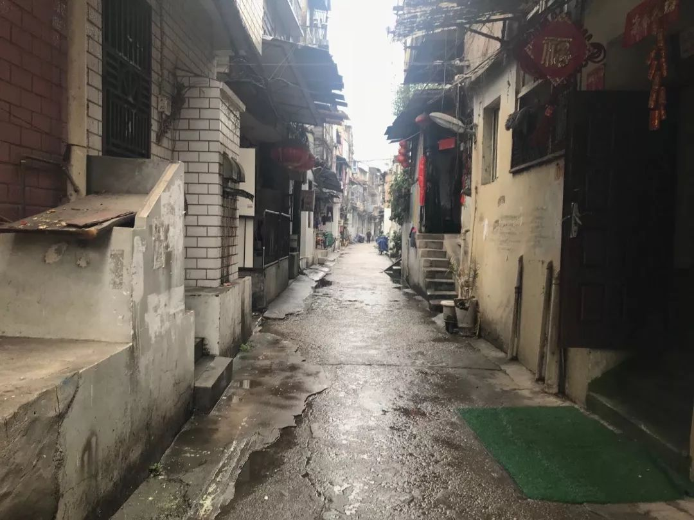
武汉街景（图片由郭晶提供）
购物清单
生存底线：
大米、面条、咸菜、咸鸭蛋等
（这些属于必须且保命的食物，且可以存放很久）
基本生活：
土豆、红萝卜、洋葱、芹菜、蒜苔、肉等
（这些属于日常做饭的食材，相对耐放）
“奢侈品”：
小鱼干、豆腐干、肉干、蜂蜜、酸奶等
（这些食品可以一定程度上减少我们的匮乏感，感到生活还有不止是生存下去而已）
扫码打赏
给郭晶加小鱼干
原文链接 备份链接 作者 | 薛芳 孙宏超 相欣 安然 马关夏 李越 编辑 | 康晓 出品｜深网·腾讯小满工作室 欢迎下载腾讯新闻APP，阅读更多优质资讯 平平安安就是年。 突袭而至的新病毒能阻止很多中国人在这个春节里团聚，但没有什么能阻 …
原文链接 备份链接 这几天都睡得特别晚，昨天凌晨两点多，突然在网上刷到武汉即将停掉市内所有公共交通，包括地铁，关闭机场和火车站等外出方式的时候，心里咯噔了一下，一来是这个措施说明疫情形势很严峻，二来是这辈子万万没想到会遇见一次“封城”。 …
原文链接 备份链接 抗击新型肺炎自救第二天: 132跳绳，07:13腹肌锻炼。图二是外网可以下载的家庭健身工具，内网如有朋友需要可联系。 抗击新型肺炎的第二天: 室友买了蔬菜，我买了很多梨，小室友又煮了梨汤，大家互相帮助，很暖。 有朋友口 …
原文链接 备份链接 昨天是武汉封城第一天，三明治紧急发起了每日书特别版《武汉日常》，邀请人在武汉和家乡在武汉的朋友，一起来用文字忠实记录他们在这个特殊时期的生活日常。 招募一经发出，就有近百位朋友迅速响应，其中有一路哭着坚持回家过年的北 …
原文链接 备份链接 本文由娱志The Review原创出品 华东师范大学传播学院学生娱评号 转载需申请授权 作者 | Moe，苏博 编辑 | 华实 导语 “自2020年1月23日10时起，全市城市公交、地铁、轮渡、长途客运暂停运营；无特殊 …